A sticky note is a transitory message that can be attached to an individual transaction, name, account, product or job. For example, you might have a note attached to the Name record of a querulous customer, so that whenever you sell something to her the note pops up warning you to be careful. Notes will automatically appear when the record is open or the item is used, and will disappear when the main window to which they are attached is closed.
Only use notes to remind you take certain action or to check something. They should not be used to record information that is to appear on a report or a form such as an invoice.
Example: The product “BLUEBURGER” has a note attached that will appear whenever the item is sold. It appears in a sales transaction as shown:
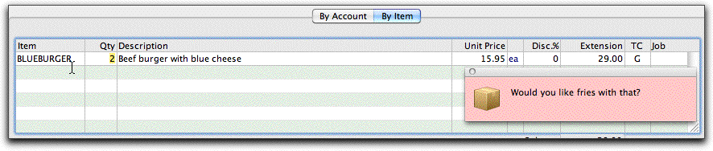
Click the Add Note icon, or choose Edit>Add Note
The Sticky Note entry window will be displayed
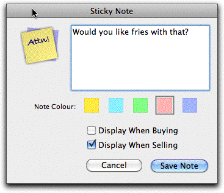
Notes that are for accounts, names and products can also appear when entering a transaction. Some notes might be applicable only for sales transactions, and others for just purchases.
To save the note, click the Save Note button
The Sticky Note entry window will close.
When activated, the Note will be displayed in a floating window. If there is more than one note, they will be joined. The source of the note is indicated by the note icon
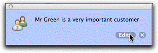
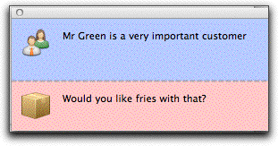
To dismiss a note⌘-/ (Mac)
The note window will close (leaving the original note intact).
You cannot edit or delete a note directly from the transaction window; instead you must drill down to the original note:
The drill down arrow will appear (if it doesn't, click on the title bar of the note and then hover over the bottom right hand corner).
The originating master record and note will be displayed
The Edit and Delete buttons will appear
The Sticky Note entry window will be displayed
Note: On a transaction window, the sticky notes for related items (such as the customer, or the item) will only appear when the entry is made or modified. They will not be redisplayed if the transaction is merely opened.
1 In MoneyWorks Gold, you can also use Scripts to do more complex validations.↩︎
2 Creation and changing validation lists is controlled by a user privilege↩︎
MoneyWorks presents information as lists. These lists are “live” and can be easily sorted, searched, printed or customised, providing quick access to your data.
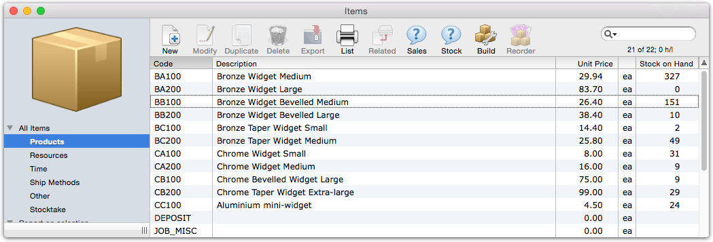
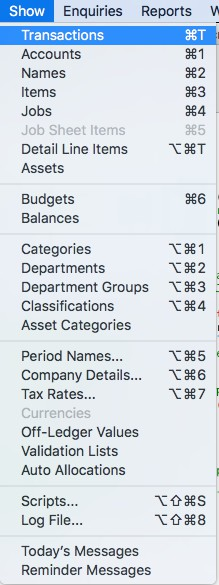
List on a MacThe wonderful thing about lists is they all work alike; once you can use one list, you can use them all—adding a new product is done in exactly the same way as adding a new transaction, account code or client. So it is well worth spending a few minutes to read this chapter.
A list is a representation of a source “file” such as items (as shown above for both Windows and Mac) or transactions. Lists are accessed from the Show menu (right), or you can use the keyboard shortcut (as shown in the Show menu) to open a list with a single keystroke.
Each row in the list represents a record in the file—for example, a transaction if you are looking at the transactions list, or a product if you are looking at the product list. You can customise each list so that it contains the information in a form that best meets your individual needs —see Customising
Your List. Customisation features include changing the position of columns, resizing columns, and also adding and removing columns.
At the top of most list windows is a toolbar. This provides easy visual access to the main operations that can be performed on the list, or on records within the list. For example, to add a new item to the list, simply click the New toolbar button; to duplicate a record, click once on the record in the list so that it highlights and then click the Duplicate button.
Resizing the List: The list can be resized by dragging any of the edges or the bottom right-hand corner. Or you can use the standard zoom and maximise controls in the list window title bar (at the top left of the window on the Mac, and the top right on Windows). On Windows you can press F12 to zoom the window.
Moving Through the List: Use the vertical scroll bar to scroll up or down the list. Use the Page Up and Page Down keys to scroll the list up and down a page at a time. The Home key scrolls to the top of the list and the End key takes you to the bottom of the list.
Closing the List: Click the Close Box in the window’s title bar to close the window, or choose File>Close Window, or simply press Ctrl-W/⌘-W.
Viewing a Record: To view or modify a record in the list, highlight the record by clicking on it and press the enter key, or simply double-click the record. A window will open showing the information in the record.
Most lists have a sidebar on the left hand side that allows you to view a predefined subset of the data displayed1, or print a report based on the records shown or highlighted in the list. For example, in the Names list, clicking on the Customers sidebar view will display just your customers.
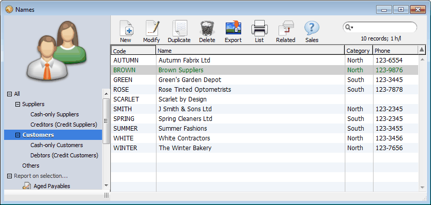
shown:
The first number is the number of records in the found set
The second number is the total that can be displayed in the list;
331 records are being displayed out of a possible 501 records that could be displayed. 12 records are highlighted.
The third number is the number of records that are selected (highlighted) in the source file.
Note that the terminology of the status changes, depending on how much room there is.
Each view is named, and to see the records associated with a view, simply click on the name in the sidebar. The left and right arrows keys can also be used to move from view to view2.
Some views (such as those in the Names list) are hierarchical. Clicking on Customers for example will show all customers, whereas clicking on Debtors will just show those customers to whom you extend credit. Hierarchical views have a small disclosure control next to them—click on this to expand or collapse the views shown in the sidebar.
Note: When you search a list, only the records in the current view are searched.
Useful reports that are based on the records shown (or, in some cases, highlighted) in the list are available under the Report on Selection tab in the sidebar. Simply click on the report name to start printing/previewing the report.3
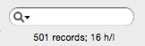
The Status IndicatorThe status indicator is located at the top right of every list window, under the search box. This normally displays the number of records in the list, and the number of these that
Each list window has a toolbar at the top that provides easy access to the most commonly used commands that are applicable to that list, and a search box for quickly searching for records in the list.
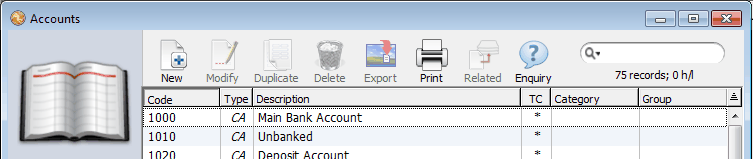
Some toolbar buttons, such as New and Print List, are always available, whereas others (like Export) operate on the highlighted records — see Selecting Records in a List in the list—if there are no highlighted records in the list, the buttons will be disabled.
Note that these commands are also available in the menus, as are other, less common commands that may be used with the list. Because they are menu commands, they can be invoked using the associated keyboard shortcut (e.g. Ctrl-N/⌘-N for New, Ctrl-P/⌘-P for Print List).
On the right hand side of the toolbar is the search box, which also contains the filter menu4—the search box allows quick text searches in the list, and the filter
are highlighted. Where only a subset of the available records
are displayed, for example after a search, three numbers are
The status indicator
is under the search box. In this example
allows you to easily display records that meet some predefined criteria—see List Filters.
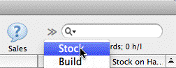
Note: If the list window is not wide enough to accommodate the search box and the toolbar icons, the number of icons displayed will be reduced, and an » displayed next to the search box to indicate this. Clicking on the » will display a drop down menu of the missing toolbar commands, allowing you to access them.
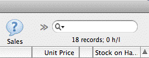
Shortend toolbar menu Selecting from shortend icon
Where one of the hidden toolbar icons itself contains a menu (as in the Adjust icon in the Transaction list), only the first command in that menu is available.
Often you may want to work with only certain records from the list. If these records have a particular set of information in one (or more) fields, you can use the Search commands —see Finding Records using the Search Box to isolate the records.
You can also use the mouse to highlight a number of records. These records might be together in the list (contiguous), or scattered throughout the list (non- contiguous).
To highlight a contiguous block of transactions:
Hold down the Shift key and click on the last record in the block
All of the transactions between the first selected one and the one that you click on will be highlighted.
If you drag the mouse with the Shift key still held down, the highlighting will follow the mouse. When all of the desired records are highlighted, release the mouse button.
If you click on a record that is already highlighted, the record will become unhighlighted.
You can highlight a group of records by using the shift key, and then hold down the control/command key (after releasing the shift key) to add or remove records to the selection.
All the records in the found set are highlighted.
As records are highlighted, the status indicator under the Filter menu changes.
Having highlighted a number of records, you may want to make them the found set (i.e. the only records which are visible in the list). Use the Find Selected command to do this:
The highlighted records will now be the found set.
The status indicator changes to reflect the number of records in the list.
To restore all the records to the window after you have performed a search:
All the records for the currently selected tab view will be displayed in the window.
If the list window has tabs in it, clicking the current tab has the same effect.
Note: Only the records that match the current filter are restored. You may need to reset this to No Filter if you want all the records.
When you invert the current selection all unhighlighted records will become highlighted, and vice versa. For an example of the useful of this command—see Example 2: Who has not purchased these products.
To invert a selection:
The highlighted records in the list will become unhighlighted, and the unhighlighted ones will be highlighted.
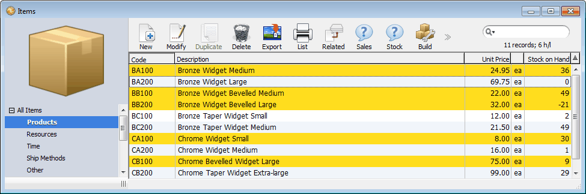
List after invert selection
Note: The records highlighted will (normally) change if the list is sorted. For performance reasons, the current selection is only preserved if you have a small number of records highlighted, and you are not operating on a high latency network.
Because the lists in MoneyWorks are “live”, we can manipulate the records shown in them by sorting and searching.
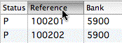
The records in a list can be sorted by any of the columns in the list
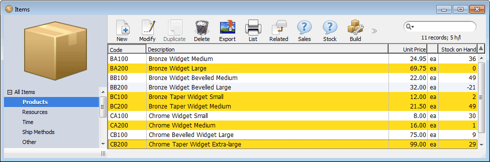
The records will be sorted according to the data in the column. The column heading will be highlighted to indicate it is the sorted column.Click on a column heading to sort the list by that column.
Original list
Some columns will sort instantly, and some will take longer. In the transaction list for example, the column corresponding to your reference number (invoice number, cheque number etc.) will sort instantly, as will the debtor/creditor code column for invoices, whereas the columns for Description and Gross will take longer to sort.
Tip: To sort two columns, first sort the minor column by clicking on its column heading, then hold down the option key (Mac) or the shift key (Windows) and click on the heading of the major column.
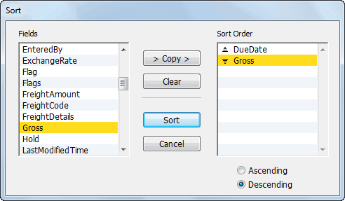
Note: If you have fewer than 10 records highlighted in this list, the same records will still be highlighted after the sort.
Sorting is done in either ascending (smallest to biggest) or descending (biggest to smallest) order. The Sort Direction Icon (above the vertical scroll bar) shows the current direction of the sort.
Direction icon
Click again to change the sort direction
Ascending order (e.g. A...Z)
Descending order (e.g. Z..A)
The sort direction icon is at the right hand end of the column headings bar (above the vertical scroll bar). It toggles the sort direction between ascending and descending.
When a list is sorted by a column in this way, MoneyWorks will remember the sort order that you have selected. Even if you close the document, MoneyWorks will sort the list the same way next time you open it.
More complex sorting is available using the Sort command in the Select menu, which can sort by multiple fields, or by data that does not appear in the list window. However such sorting is temporary, and will be lost once you start entering or modifying records in the list.
The Sort dialog box displays the fields in the file that are available for sorting on the left—these are the field names, which may differ from the column names, and are described in Appendix A—Field Descriptions.
The field name is copied to the Sort Order list.
The icon to the left of the field name in the Sort Order list indicates whether the field will be sorted in ascending or descending order.
Double-clicking a field is a short-cut for copying it to the Sort Order list.
Repeat for all the fields that you want to sort by in the order in which you want them to be sorted
There is a maximum of 10 sort levels.
The records will be displayed in the new sort order in the list. None of the column headings will be underlined.
Note that the Sort Direction icon in the list heading will not have any affect on a sort performed this way.
Typing into the list (see below) will not work when the list has been sorted using
The search box will be activated, with the cursor flashing.
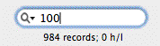
MoneyWorks will start searching as soon as you finishthis method. It only works when the list has been sorted by clicking on one of the column headings for a text field.
typing. Results are displayed progressively. There is no need to wait for the search to finish (it may take several
Keying into the search box.
Often you will want to locate a particular record or group of records. There are several ways to do this:
seconds on a very large file). The search will automatically stop as soon as you change the view or sort the results.
When searching a large file, or searching over a network, a progress bar will be displayed under the search box.
Sort the list into some order so that the records you require are together. Use the scroll bar to move through the list.
Use the search box in the list window to do a text search to locate the record(s) that you require.
Use the Find by Field command to locate the record(s) that you require based on a nominated value in a specified field, or the Find by Formula for records based on some complex search criteria.
Only the records in the list that have words matching the text you entered into the search box will be displayed.
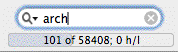
Note that you will need to resort the list after the search is complete.
Note that using the search box in the transaction list will also search the item code and detail description. Consider the
Longer searches will display a progress bar over the status.
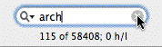
The clear search box icon
Sort the list by an appropriate column heading and type in the first few characters of the value you are after (only works for text columns, not date or numeric). The list will be positioned at a record whose field matches the characters that you have typed in.
The search box in the toolbar allows a quick full-text search of the records in the view5. The search looks for any words or numbers that match or begin with the text that you enter. Any records that do have a match are displayed, forming the found set.
To use the search box:
following example, where we have typed 100 into the search box:
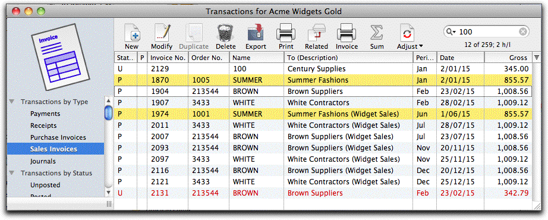
The first transaction in the list (to Century Supplies) is displayed because the
customer code for Century starts with 100;
The two highlighted transactions to SUMMER are displayed as their order number starts with 100;
The red transaction at the bottom of the list is displayed because at least one of the detail lines has a word starting with 100;
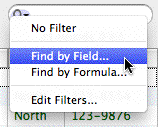
The other transactions are displayed because their gross (treated as an unformatted number) starts with 100. Entering 1 or 10 or 100 or 1009 or 1009. or 1009.1 or 1009.12 will find the transactions with a gross displayed as 1,009.12The Find by Field facility allows you to search for records in the currently displayed list which have a specific value in a nominated field. Only records that match the criteria will be
The fields listed in the pop-up menu will depend upon which file you are searching, and may have different names than the columns —see Appendix A—Field Descriptions.
The right-most field may alter to display a pop-up menu containing valid search values.
Specify the value to search for in the right hand field
Depending upon which field you are searching, this may be either an enterable field or a pop-up menu. If it is a field, you need to type in the value. If it is a pop-up menu, you need to select the value from the list of possible ones in the menu.
displayed in the list, and these form the found set. Note that records found will be automatically filtered by the current filter. Set this to No Filter if you want to search the entire list.
Selecting Find by Field
Note that searching in Text fields is not case-sensitive. E.g. “Different” is the same as “DIFFERENT”
Choose Find by Field from the Filter menu (in the left of the search box)
This displays the Find dialog box. Use this dialog box to enter the criteria that will locate the records you want to view or summarise.
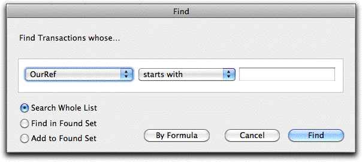
These determine how many records are searched.
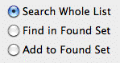
Search Whole List: The filtered records in the list (or tab view) are searched, regardless of the contents of the current found set. After the search, the list displays only therecords that match the search criterion, and these records become the found set.
Find in Found Set: The only records searched are those in the current found set.
After the search, the records displayed (the new found set) will be those records previously in the found set that match the search criterion.
This reduces the number of records in the found set.
Add to Found Set: The records in the entire list (or tab view) are searched, and those records that match the search criterion are added to the current found set. The found set thus becomes larger.
The list will be searched, and the records that match the search criterion will be displayed. If the Add to Found Set option was selected, both the records that matched the search and the records previously listed will be displayed. This constitutes the new Found Set.
Clicking the Cancel button will cancel the search.
Let’s say we want to find all cash payments dated from the 15th to the 31st October 2012 inclusive. To do this:
Choose Find by Field from the Filter menu in the search box
The Find window will be displayed
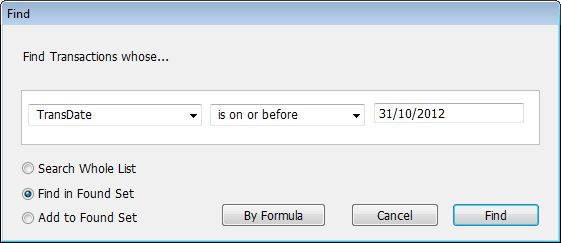
Note the radio button in the bottom left corner is set to Find in Found Set
Only those cash payments dated on or between 15 Oct and 31 Oct 2012 will be displayed.
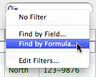
Tip: The Find Selected command in the Select menu will turn a manually highlighted range of records into the found set.
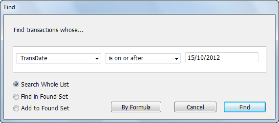
You can use Find by Formula (also in the Filter menu in the left of the search box) for more complex searches. Again this works on the currently displayed list window.1. Choose Find by Formula from the Filter menu in the search box
The Advanced Find dialog box is displayed.
Find by Formula
All Payments dated on or after the 15 October 2012 are displayed.
Choose Find by Field again, and set to the following, and click Find
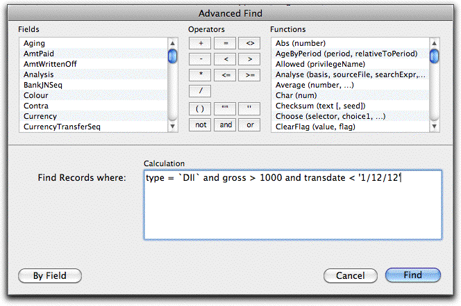
The fields relevant to the file being searched are listed in the left hand list of the window. This list will vary depending upon the file being searched. See Appendix A—Field Descriptions for a complete list of field definition.
The names in the list on the left correspond to the fields in the file. You can double-click on these (or type them), to include them in the search expression. Relational searches can be used.
Only those records for which the search expression evaluates to true will be included in the list after the search is done.7
MoneyWorks supports full expression searching. This means you can have simple searches such as:
gross > 1000
or more complex, such as:
which will find all transactions whose GST component is not 10% (use round(gross/9, 2) <> taxamount for 12.5%). The expression can contain more than one field from the field list, as well as the special built-in functions from the Functions list —see Functions.
Relational searches can also be used. The following finds (in the transaction list) every transaction less than $50 for every customer/supplier with a code in New South Wales:
[name:state="NSW"][transaction:gross<50] The relational operators are:
Operator Meaning
= is equal to
<> is not equal to
< is less than
> is greater than
<= is less than or equal to
>= is greater than or equal to
There may be more than one criterion that you want to search for—in this case use the And, Or and Not operators, e.g:
round(gross/11, 2) <> taxamount and transdate >= '1/7/2012'
Clicking the Cancel button at this point cancels the search.
The records that match the criterion you specified are displayed in the list window—these records form the Found Set
If MoneyWorks cannot understand your search criteria, an error message will be displayed and the text of the search equation will be highlighted beginning at the point that it does not understand.
round(gross/11, 2) <> taxamount
If you include a reference to a detail line field in your search expression when searching transactions, MoneyWorks will evaluate the expression once for each detail line in the transaction, and will select the transaction if the expression is true for any of the detail lines. For example:
Detail.Account = “1000@” and detail.gross > 99
will match any transaction for which any of it’s detail lines are coded to an account starting with “1000” and have a gross of over $99.00. This will not find a transaction with the following lines as the expression is false for each line.
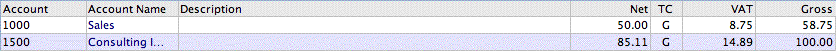
Tip: You can search detail lines directly in the Detail Line Items list.
When searching on a text field, you can use the “@” wildcard character as a “begins with” search. For example:
description="Phon@"
will find all records whose description starts with “Phon”, e.g. “Phone”, “phonograph” (remembering that search is not case sensitive), but not “iPhone”.
To search for a text within a text field, you can use the PositionInText() function, or, more handily, the text pattern you are searching for encosed in “@” symbols. For example:
description="@phon@"
will find not only “Phone” and “phonograph” as above, but also “My iphone is black” and “His phonograph is bigger than hers”.
Tip: MoneyWorks Gold users can access the Find by Field or Find by Formula by choosing Select>Advanced Find or pressing Shift-Ctrl-F/Option-⌘-F
Tip: You can switch from the Find by Field to Find by Formula search windows by clicking the By Formula button on the search window (and back the other way by clicking the By Field button).